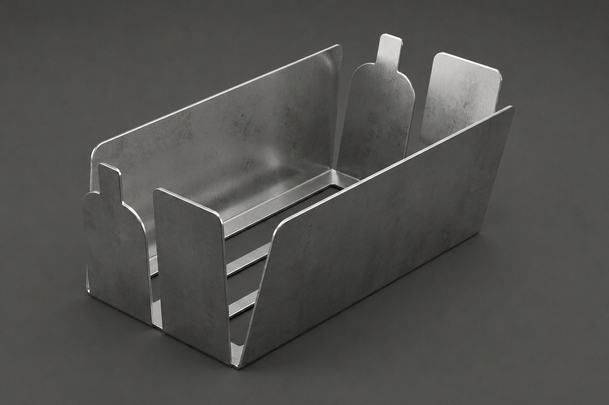
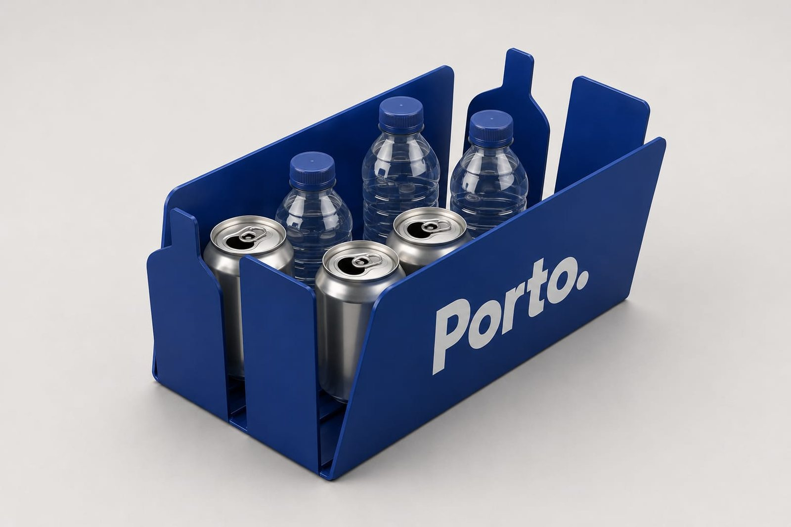

Ninguém devia ter de revirar o lixo.
Um suporte em aço inox para os seus caixotes do lixo, onde os munícipes depositam o lixo em pé e ninguém tem de revirar o lixo.

Cada garrafa vale dinheiro. E está dentro do lixo.
A papeleira da esquina deixou de ser um caixote e passou a ser um cofre — e há quem a esvazie no passeio para chegar ao que lá está.
- Papeleiras reviradas e lixo espalhado na rua.
- Quem procura embalagens tem de escavar entre resíduos.
- Limpezas repetidas nas mesmas ruas, todas as semanas.
- A embalagem fica à vista, fora do contentor.
- Recolhe-se com a mão, sem tocar no lixo.
- A papeleira fica intacta e a rua fica limpa.
Quatro problemas, uma peça
Dignidade
Quem vive do depósito deixa de escavar em resíduos para chegar ao mesmo valor.
Ruas limpas
Menos contentores despejados no passeio, menos limpezas repetidas.
Mais reciclagem
A embalagem volta ao sistema de retorno em vez de ir para aterro.
Menos conflito
Acaba a fricção entre quem recolhe, quem limpa e quem vive na rua.
aro — um investimento na dignidade e no espaço público.
Três gestos, um ciclo fechado
-
1 · Pousar
Quem não quer o reembolso pousa a garrafa ou a lata no suporte, à vista.
-
2 · Recolher
Quem a quer leva-a com a mão.
-
3 · Devolver
A embalagem entra num ponto Volta e o depósito é reembolsado.
Não é uma ideia nova. É uma ideia comprovada.
Na Alemanha existe desde 2012, em centenas de cidades. Os Países Baixos e a Irlanda seguiram o mesmo caminho: primeiro o depósito, depois a adaptação do espaço público.
«Impõem-se adaptações ao sistema — respostas assentes na adaptação da infraestrutura urbana.»
Nas cores do seu município
Um produto, adaptado à identidade de cada cidade. Inox natural ou lacado.


Simulações. Os símbolos municipais servem apenas para visualização e não implicam qualquer acordo ou endosso.
É de uma câmara, junta de freguesia ou empresa municipal? Começamos por uma visita técnica de uma hora, sem compromisso.
As dúvidas mais comuns
Não vai atrair mais lixo?
E se partirem ou roubarem o suporte?
Dá muito trabalho instalar?
Isto não normaliza a pobreza?
Peça o aro na sua rua.
Deixámos um email pronto a enviar à sua junta de freguesia. Demora dois minutos.